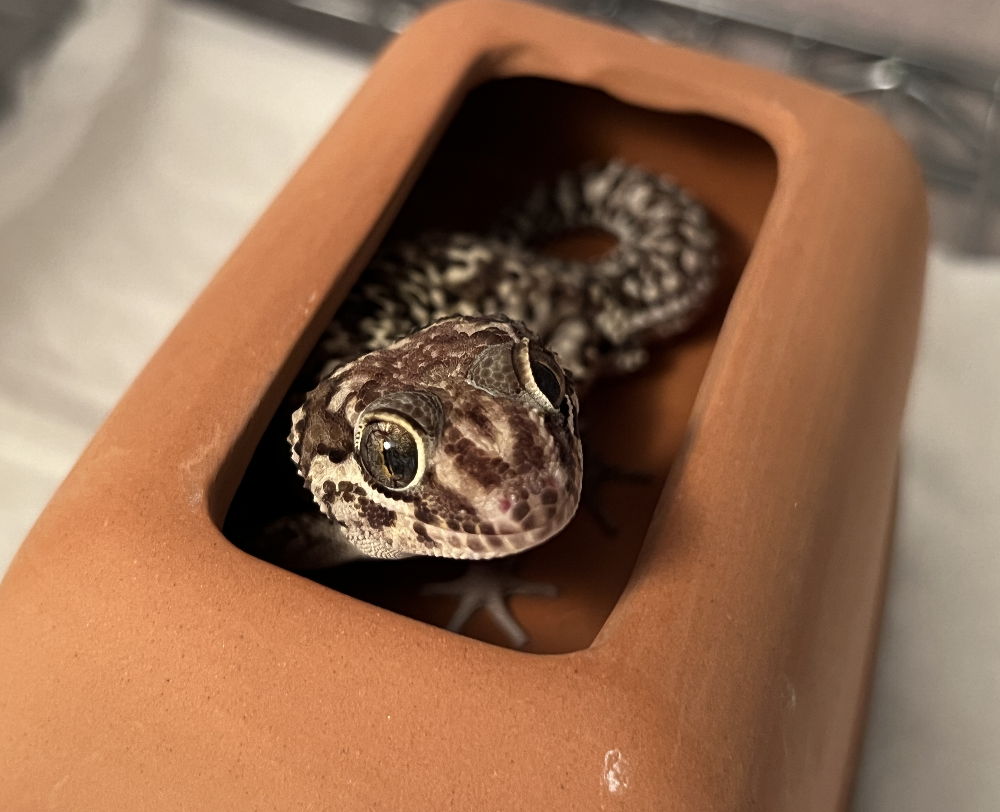
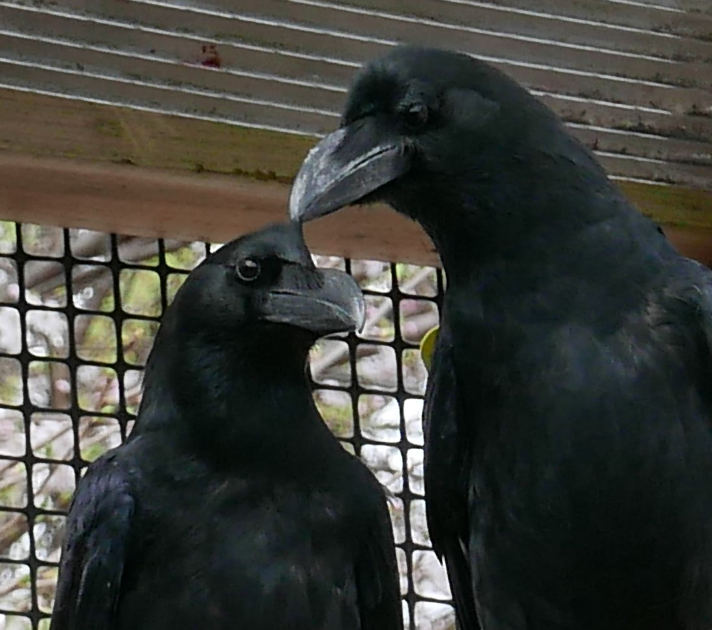

Illia Aota

Postdoctoral Researcher
Developmental Neuroscience Project
Department of Basic Medical Sciences
Tokyo Metropolitan Institute of Medical Science
E-mail: illia.s.aota[at]gmail.com
Research
My earlier work examined social behaviourin large-billed crows. I now study the evolution and development of the vertebrate brain — in particular how the pallium is built and how it has diverged across amniotes — working primarily in birds and non-avian reptiles.


CV
- Apr 2026 ~: Postdoctoral Researcher. Tokyo Metropolitan Institute of Medical Science, Japan
- Apr 2026 ~: Postdoctoral (PD) Research Fellowships of Japan Society for the Promotion of Science (JSPS)
- Feb 2026: Ph.D. in Psychology, Keio University
- Apr 2020 - Mar 2023: PhD Student. Keio University, Japan
Publications
- Kumamoto, T., Hara, Y., Katayama, R., Aota, I., Achiwa, H., Noguchi, Y., ... & Ohtaka-Maruyama, C. (2026). Dual Developmental Origins and Activity-dependent Specification of Mammalian Subplate Neurons. bioRxiv, 2026-06. https://doi.org/10.64898/2026.06.12.731985
- Wada, K., Katayama, R., Aota, I., Hanashima, C., Kumamoto, T., & Ohtaka-Maruyama, C. (2025). Lineage Analysis of Pallial Subdivision-Derived Cells in the Developing Chick Pallium. Development, Growth & Differentiation, 67(9), 466-478. https://doi.org/10.1111/dgd.70029
- Tsurugizawa, T., Komaki, Y., Aota, I., Suematsu, M., Ohtaka-Maruyama, C., & Kumamoto, T. (2025). A cross-species brain magnetic resonance imaging and histology database of vertebrates. Scientific Data, 12(1), 1206. https://doi.org/10.1038/s41597-025-05540-5
- Aota, I., Takano, M., & Izawa, E. I. (2025). Effects of a short-term removal of the dominant male on vocalization in captive groups of large-billed crows (Corvus macrorhynchos). Royal Society Open Science, 12(4), 241458. https://doi.org/10.1098/rsos.241458
- Aota, I., Yatsuda, C., & Izawa, E. I. (2023). Salivary corticosterone measurement in large-billed crows by enzyme-linked immunosorbent assay. Journal of Veterinary Medical Science, 85(1), 71-75. https://doi.org/10.1292/jvms.22-0383
Links
Last updated: July 13, 2026